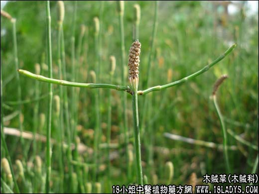

【中药概述】
木贼草为木贼科草本植物木贼的地上部分。甘、苦，平。归肺、肝经。
1．疏散风热，明目退翳：善治因风热之邪引起的目赤、多泪等。常与蝉蜕，谷精草，甘草，苍术，蛇蜕，黄芩等同用。如（<证治准绳>神消散）。
2．止血：用于便血、痔疮出血。宜与地榆，槐花等同用。
【药效鉴别】
木贼草轻扬升散，善于疏散肺、肝胆风热，散郁火。《通俗伤寒论》谓其功效与柴胡相近。
【临证应用】
本品配苍术各30g、生姜 葱白12g，水煎服。治风湿欲发汗者。
【药理作用】
1.有降压、消炎、收敛及利尿作用。2.硅酸盐有收敛作用，对于接触部位有消炎、止血作用。
【化学成分】
本品含木贼酸、硅酸盐、皂甙等。
【用量用法】
6——15g，水煎服。